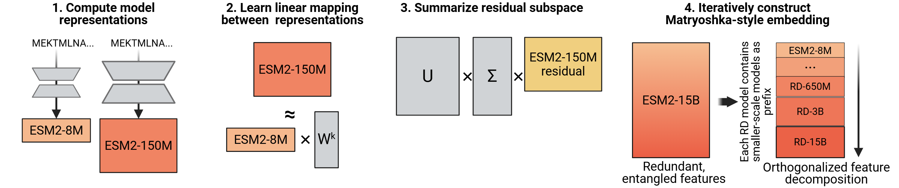
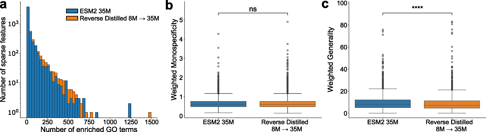

In NLP, scaling laws are remarkably predictable — double the parameters, get proportionally better performance (Kaplan et al. 2020, Chinchilla 2022). But in the protein world, something breaks:
This was documented by Li et al. (2024) and the ProteinGym leaderboard, where the 650M model frequently beats the 15B. Pascal Notin wrote a blog post titled "Have we hit the scaling wall for protein language models?" This paper proposes a fix.
The Core Problem
The hypothesis: small models are capacity-constrained, so they prioritize the most broadly useful features — secondary structure, hydrophobicity, conserved motifs. Large models have room to also encode rarer patterns (family-specific allosteric signals, higher-order epistatic interactions), but these get entangled with the basic features in the same embedding space. When you use a linear probe, the rare features act as noise that drowns out the fundamental signal.
The Algorithm: Step by Step
Normal knowledge distillation compresses a big model into a small one (teacher → student). Reverse distillation flips it: use the small model to decompose the big one.

Figure 1 from Catrina et al. 2026. The reverse distillation pipeline: (1) compute embeddings from both models, (2) learn a linear mapping from small to large, (3) SVD the residual to summarize the orthogonal subspace, (4) chain iteratively across the model family to build Matryoshka-style nested embeddings.
Concrete example with ESM-2 8M (dim=320) and ESM-2 650M (dim=1280), run on L=500,000 total residue positions:
Step 1: Generate Embeddings
Run all sequences through both models. Hr = 8M output (L × 320). Hp = 650M output (L × 1280).
Step 2: Learn the Linear Mapping
Fit W* (320 × 1280) via principal component regression: Hpredicted = Hr × W*. This asks: how much of the 650M representation is just a linear transformation of what the 8M already knows?
Step 3: Compute the Residual
R = Hp − Hpredicted (size L × 1280). This is everything the 650M encodes that cannot be linearly predicted from the 8M model — the unique contribution of the larger model.
Step 4: Compress Residual via SVD
Apply SVD to R. Take the top (1280 − 320) = 960 right singular vectors (Vres). These are the 960 orthogonal directions capturing the most variance in the residual. Project: Hres = R × Vres (L × 960).
Step 5: Concatenate
Hrd = [Hr, Hres] = [320 dims from 8M, 960 dims of residual] = 1280 dims total. The embedding is now pre-organized: basic features first, specialized features second.
The Matryoshka Property
Named after Russian nesting dolls. After chaining through the full ESM-2 family, the rd.15B embedding (5120 dims) is structured so that:
Truncate to first 320 dims → exactly the 8M embedding
Truncate to first 640 dims → rd.35M
Truncate to first 1280 dims → rd.650M
Truncate to first 2560 dims → rd.3B
Full 5120 dims → rd.15B
Each prefix is a valid, functional embedding at that scale. Embed once, choose your compute budget downstream. And crucially — performance monotonically improves as you include more dimensions.
Key Results
ProteinGym DMS (Single Mutants, 28 datasets)
Model
Spearman ρ
rd version
Spearman ρ
ESM-2 650M
0.879
rd.650M
0.885
ESM-2 3B
0.881
rd.3B
0.893
ESM-2 15B
0.899
rd.15B
0.904
Scaling Consistency
Comparison
% datasets where larger wins
Baseline: 3B > 650M
54% (broken)
rd.3B > rd.650M
93% (fixed)
Baseline: 15B > 3B
~75%
rd.15B > rd.3B
~86% (fixed)
Multi-mutant predictions show larger gains: rd.15B hits 0.615 on 4-mutant datasets vs. 0.566 for baseline 15B. Inference overhead is only 1.5–1.7x since the small models are fast.
Connection to Paper #1 (Potts Models)
The parallel to the Potts decomposition from Paper #1 is direct. The fields hi(si) capture broadly conserved per-site features. The couplings Jij(si, sj) capture higher-order epistatic interactions. In raw ESM embeddings, these get mixed. Reverse distillation is performing an analogous decomposition: separate the broadly-shared signal (small model subspace) from the unique higher-order signal (orthogonal residual).
ICLR 2026 Peer Review
The paper went through OpenReview with four reviewers. It was a close call — accepted as poster, with the rebuttal doing significant heavy lifting.
Reviewer
Rating
Confidence
Stance
akEp
8 (accept)
3/5
Enthusiastic. Only concern: inference overhead
nDBC
8 (accept)
3/5
"Highly novel," "elegant." Wanted 15B and O-LoRA citation
XboP
6 (marginal accept)
4/5
Pushed hard on linearity limitation and 15B gap
xk7u
4 (marginal reject)
4/5
The skeptic. Unvalidated hypothesis, trivial theorem, missing baselines
What the Original Submission Was Missing
Three of four reviewers flagged that the original submission didn't include the 15B model — where the scaling failure is most severe. The paper originally only showed 650M → 3B. The rd.15B experiments were completed during rebuttal and saved the paper.
Reviewer xk7u's Hits (the Skeptic)
Hit 1: Unvalidated hypothesis
"The paper builds its entire motivation on the 'general vs. specialized representation' hypothesis but does not provide a quantitative or qualitative analysis to validate it."
The SAE experiments (Section 3.4, Figure 2) were added during rebuttal to address this. But they only tested on the 35M model, not where the scaling problem lives (3B/15B).
Hit 2: Trivial theorem
"The proposed Optimal Constrained Approximation theorem only guarantees minimal reconstruction error under a prefix constraint: a standard property of linear least squares combined with SVD."
This is correct. It's Eckart-Young with a prefix constraint. The theory isn't novel.
Hit 3: Missing fusion baseline
"It remains unclear whether RD's improvement comes from its 'distillation mechanism' or simply from aggregating multi-scale features."
When the concatenation + PCA baseline was added (Appendix A.2), it won 62–76% of the time. The Matryoshka property is an engineering convenience that justifies the method, but the naive approach is often better at raw performance.
The Meta-Review Verdict
Area Chair WU8a
"The authors' responses address the most critical concerns... Reviewer xk7u would have increased the score from 4 to 6." Accepted as poster, with the acknowledgment that generality beyond ESM-2 is untested.

Figure 2 from Catrina et al. 2026. Sparse autoencoder (SAE) analysis comparing base ESM-2 35M vs. rd.35M. (a) rd.35M features are enriched for more GO terms, indicating more functionally relevant information. (b) Similar monospecificity (feature consistency). (c) rd.35M features are significantly less general (more specific biological functions). Added during rebuttal to address Reviewer xk7u's concern about the unsupported "general vs. specialized" hypothesis.
A Buried Rebuttal Detail
The authors revealed during rebuttal that nonlinear mapping improves reconstruction (R² from 0.422 to 0.528 for 8M→35M) but "did not immediately translate to improved downstream performance." This is actually revealing — better reconstruction of the large model's embedding doesn't help downstream tasks. It suggests linear decomposition works not because it's a good approximation, but because it's a good regularizer: it forces the residual to be simple, making the linear probe's job easier.
What a Simple Reading Might Miss
Only tested with linear probes. Every benchmark uses ridge regression. If your downstream predictor is a nonlinear MLP head, does the entanglement problem still matter? Never tested.
1,000 training sequences determine everything. W* and Vres are learned from 1,000 UniRef50 sequences and applied to every future protein. No robustness analysis on training set composition.
Concatenation + PCA often wins. The simpler baseline beats reverse distillation 62–76% of the time but lacks the Matryoshka nesting. If you don't need nesting, the simpler method is better.
ESM-2-specific. The method depends on ksmall < klarge. Most other model families don't have naturally increasing embedding dimensions across scales.
The fundamental question is unanswered.Why do PLMs scale poorly? The paper shows that decomposition helps and hypothesizes feature entanglement, but the SAE evidence is only on 35M. The mechanism remains unclear.
The term "reverse distillation" is borrowed, not coined. The authors acknowledge in a footnote that the term existed in anomaly detection literature. Their usage — decomposing large models using smaller ones as a basis — is distinct.
Bottom Line
A clean, practical paper that fixes a real problem (ESM-2 15B underperforming 650M) with straightforward linear algebra: least-squares regression + SVD. The Matryoshka nesting is a nice engineering property. But the contribution is more "engineering fix" than "scientific insight" — the scaling problem is patched, not explained, and the simpler concat+PCA baseline often performs better. The linear ceiling and ESM-2-only scope are real limitations. Still, if you use ESM-2 embeddings in practice, rd.15B is the new default.
Key References Discussed
Lin Z et al. Evolutionary-scale prediction of atomic-level protein structure with a language model.Science 379:1123–1130, 2023. doi:10.1126/science.ade2574 — ESM-2 model family (8M to 15B parameters) that exhibits the scaling plateau this paper fixes.
Li F-Z et al. Feature reuse and scaling: Understanding transfer learning with protein language models.bioRxiv, 2024. — Documented that downstream tasks rely on early, low-level features; larger models don't consistently help.
Notin P et al. ProteinGym: Large-scale benchmarks for protein fitness prediction and design.NeurIPS 36:64331–64379, 2023. doi:10.48550/arXiv.2305.15706 — The benchmark where ESM-2 15B underperforms 650M, motivating this work.
Kusupati A et al. Matryoshka representation learning.NeurIPS 35:30233–30249, 2022. — Original Matryoshka embeddings for NLP (within a single model). This paper extends the concept across model scales.
Kaplan J et al. Scaling laws for neural language models.arXiv:2001.08361, 2020. — Established predictable scaling in NLP that protein models fail to follow.
Gujral O et al. Sparse autoencoders uncover biologically interpretable features in protein language model representations.PNAS, 2025. doi:10.1073/pnas.2506316122 — SAE methodology used in Section 3.4 to probe feature interpretability.
Wayment-Steele HK et al. Learning millisecond protein dynamics from what is missing in NMR spectra.bioRxiv, 2025. — R2/R1 prediction task where rd.15B shows especially large gains (0.368 → 0.468).
Zhang Z et al. Protein language models learn evolutionary statistics of interacting sequence motifs.PNAS 121:e2406285121, 2024. doi:10.1073/pnas.2406285121 — Showed ESM-2 3B contact recovery comparable to 15B, reinforcing the scaling ceiling.